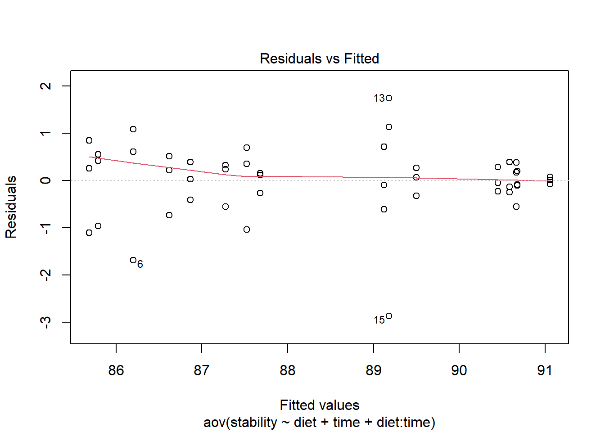
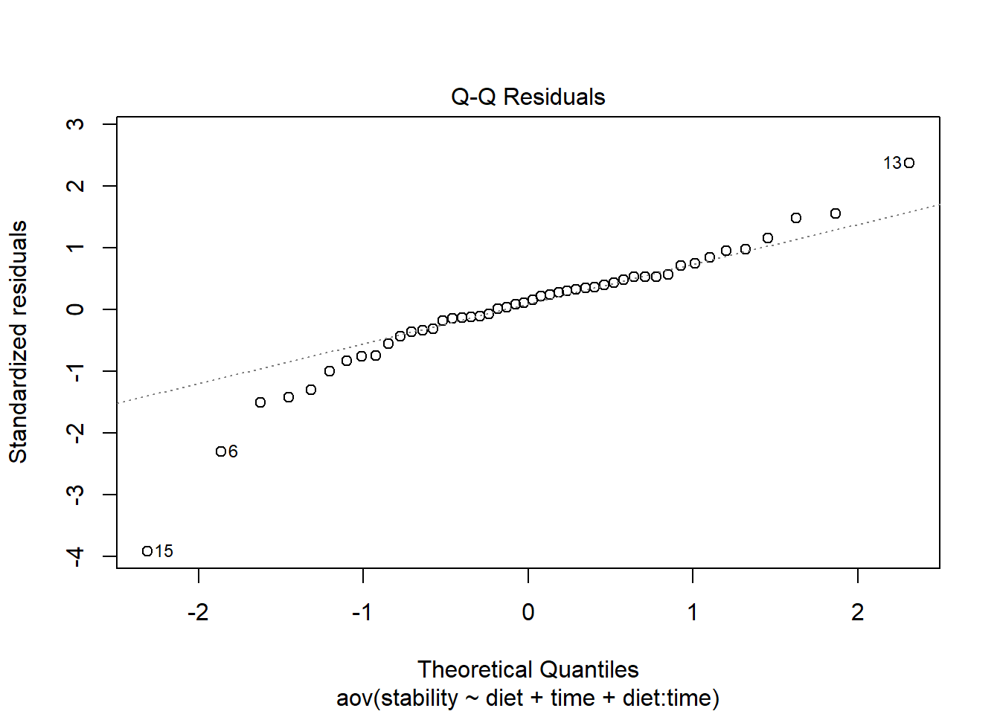
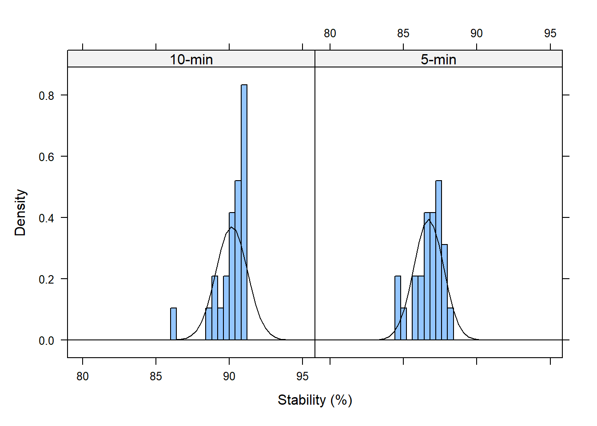
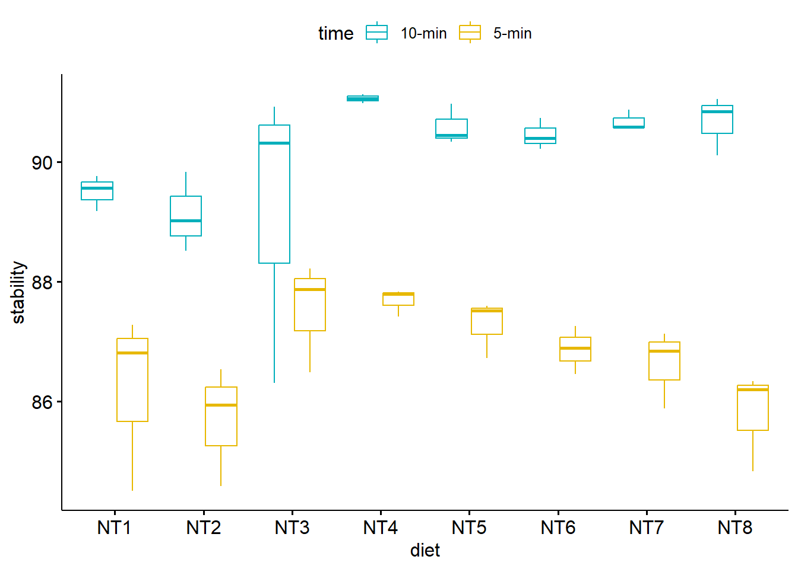
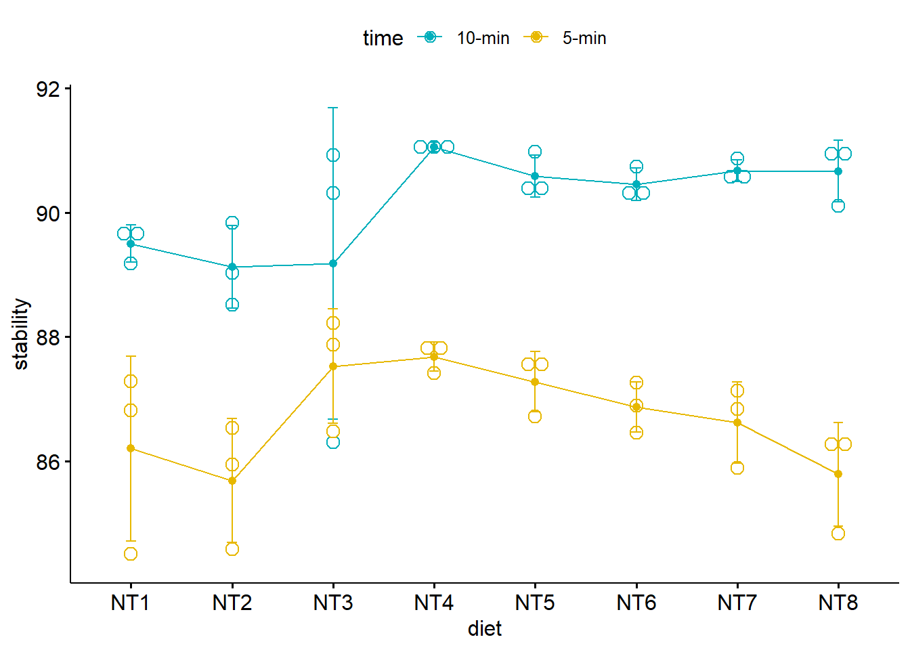
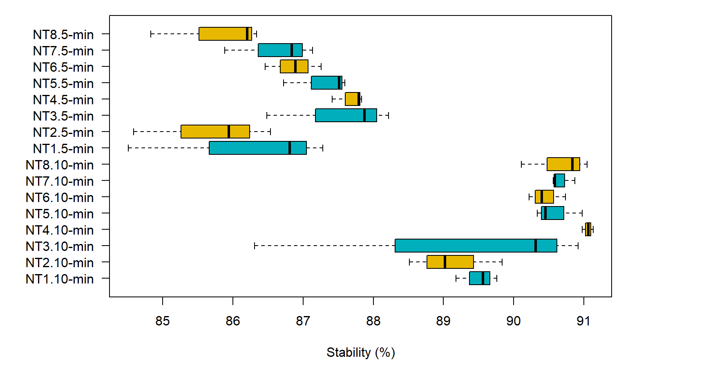
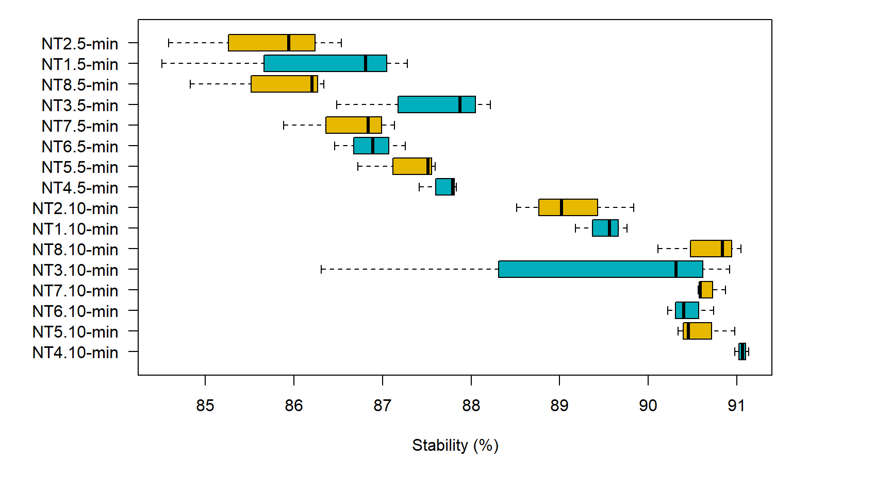
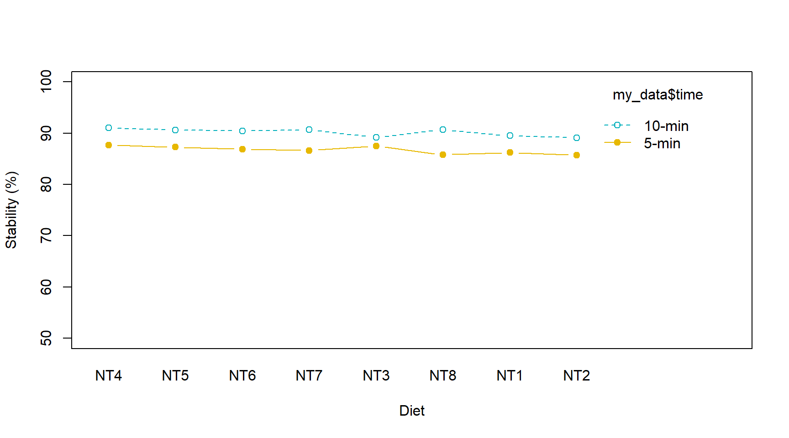

library(car)leveneTest(stability ~ diet*time, data = my_data)
Levene's Test for Homogeneity of Variance (center = median)
Df F value Pr(>F)
group 15 0.7751 0.6936
32
From the output above we can see that the p-value is (0.6936) not less than the significance level of 0.05. This means that there is no evidence to suggest that the variance across groups is statistically significantly different. Therefore, we can assume the homogeneity of variances in the different treatment groups.
Tạm dịch: Kết quả cho thấy p-value là 0.6936 lớn hơn 0.05 (giả thuyết cho là có sự phân bố không chuẩn - heterogeneity). Do đó bộ dataset này có sự phân bố chuẩn (homogeneity) trong sự khác biệt giữa các nghiệm thức.
Cách 2
Cần tính anova trước để có data vẽ đồ thị qqplot
# Compute two-way ANOVA testres.aov2 <-aov(stability ~ diet + time, data = my_data)# summary(res.aov2)# anova(res.aov2)# Compute two-way ANOVA test with interaction effectres.aov3 <-aov(stability ~ diet + time + diet:time, data = my_data)# anova(res.aov3)
Vẽ đồ thị
plot(res.aov3, 1) ## Homogeneity of variances

plot(res.aov3, 2) ## Check the normality assumpttion

Phát hiện các data point 6, 13, 15 là outlier, có thể loại ra để làm dataset phân bố chuẩn hơn.
Cách 3
# Extract the residualsaov_residuals <-residuals(object = res.aov3)# Run Shapiro-Wilk testshapiro.test(x = aov_residuals)
Shapiro-Wilk normality test
data: aov_residuals
W = 0.91161, p-value = 0.001523
p-value từ test Shapiro-Wilk normality cho thấy nhỏ hơn 0.05 (giả thuyết là phân bố chuẩn), do đó về mặt ý nghĩa thống kê thì bộ dataset này có phân bố chuẩn.
Bước 3: Khảo sát đặc điểm dữ liệu
Histogram theo time
library(lattice)histogram( ~ stability | time, data = my_data,xlab ="Stability (%)", type ="density",breaks =seq(from =80, to =95, by =0.4),panel =function(x, ...) {panel.histogram(x, ...)panel.mathdensity(dmath = dnorm, col ="black",args =list(mean=mean(x),sd=sd(x))) } )

Box plot with multiple groups
library(ggpubr)ggboxplot(my_data, x ="diet", y ="stability", color ="time",palette =c("#00AFBB", "#E7B800"))

Line plots with multiple groups
# Add error bars: mean_se# (other values include: mean_sd, mean_ci, median_iqr, ....)library("ggpubr")ggline(my_data, x ="diet", y ="stability", color ="time",add =c("mean_sd", "dotplot"),palette =c("#00AFBB", "#E7B800"))

Box plot with two factor variables
oldpar <-par(no.readonly =TRUE)par(mar =c(6, 7, 1, 6))boxplot(stability ~ diet * time, data = my_data, frame =TRUE, col =c("#00AFBB", "#E7B800"), horizontal =TRUE, las =1,axisnames =TRUE, ylab ="", xlab ="Stability (%)")

par(oldpar)
Nếu muốn vẽ boxplot theo thứ tự các cột thì cần reorder cột factor diet theo stability
my_data$diet <-reorder(my_data$diet, my_data$stability, decreasing =TRUE) my_data$time <-reorder(my_data$time, my_data$stability, decreasing =TRUE) oldpar <-par(no.readonly =TRUE)par(mar =c(6, 7, 1, 6))boxplot(stability ~ diet * time, data = my_data, frame =TRUE, col =c("#00AFBB", "#E7B800"), horizontal =TRUE, las =1,axisnames =TRUE, ylab ="", xlab ="Stability (%)")

par(oldpar)
Two-way interaction plot
interaction.plot(x.factor = my_data$diet, trace.factor = my_data$time, response = my_data$stability, fun = mean, type ="b", legend =TRUE, xlab ="Diet", ylab ="Stability (%)",pch =c(1, 19), col =c("#00AFBB", "#E7B800"),ylim =c(50, 100))

Bước 4: Phân tích ANOVA 2 yếu tố CRD
Tính p-value
# Compute two-way ANOVA testres.aov2 <-aov(stability ~ diet + time, data = my_data)# summary(res.aov2)anova(res.aov2)
Analysis of Variance Table
Response: stability
Df Sum Sq Mean Sq F value Pr(>F)
diet 7 15.999 2.286 2.5966 0.02672 *
time 1 142.822 142.822 162.2555 1.781e-15 ***
Residuals 39 34.329 0.880
---
Signif. codes: 0 '***' 0.001 '**' 0.01 '*' 0.05 '.' 0.1 ' ' 1
# Compute two-way ANOVA test with interaction effectres.aov3 <-aov(stability ~ diet + time + diet:time, data = my_data)anova(res.aov3)
Analysis of Variance Table
Response: stability
Df Sum Sq Mean Sq F value Pr(>F)
diet 7 15.999 2.286 2.8340 0.02041 *
time 1 142.822 142.822 177.0920 1.37e-14 ***
diet:time 7 8.521 1.217 1.5094 0.19953
Residuals 32 25.807 0.806
---
Signif. codes: 0 '***' 0.001 '**' 0.01 '*' 0.05 '.' 0.1 ' ' 1